Proprietary to General Electric Company
Direction 5440000, Rev# 5
Signa HDxt Service Methods
Module Version 1.0, Version Date 5/15/07
Proprietary to General Electric Company |
This Appendix contains Service Note 60963 - HSS and Vibration Troubleshooting. MR Engineering has prepared an HSS specification for base lining 1.0T and 1.5T Signa sites. The specification puts limits on FFT Area and FFT Amplitudes and is listed in this note. This spec will be extremely useful in reducing installation and warranty costs as well as troubleshooting time. By running HSS at the time of system installation, problems with site vibration can be identified and brought to the customer’s attention for correction.
This Appendix is intended to help Field Engineers use HSS for the purpose of making vibration troubleshooting more tangible. Several actual case studies will be investigated to determine the method of isolating vibration disturbances. An example of an HSS output is shown in Illustration 1.
Illustration 1: HSS OUTPUT EXAMPLE WITH AREAS OF INTEREST
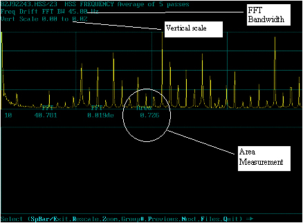
Things to take note of:
The top line shows filename and “Average of 5 passes”, The number of passes is selectable in ‘USERCVs’ when prescribing the test.
Note FFT bandwidth. All low frequency vibration troubleshooting will be performed at 45 Hz bandwidth. The bandwidth is selectable in ‘USERCVs’ when prescribing the test.
Vertical scale is important to note as rescaling the graph is sometimes helpful for viewing peak references of other HSS passes.
Area - this is the total area under the spectrum. The upper limit is 1.2 for CERD, UCERD2, EXCITE and 1.9 for UCERD.
| NOTE: | The only difference between the UCERD and UCERD2 is the Exciter Module. All the other hardware is common to both. If the Exciter Module has part number 2221399-6 then the assembly is designated as UCERD2. |
Illustration 2: Example of HSS Output for Average of 5 Passes
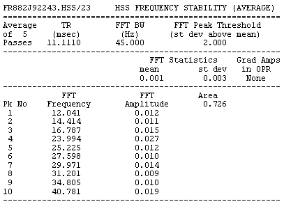
Things to take note of:
The top line “Average of 5 passes”, the number of passes is selectable in USERCVs when prescribing the test.
Note the FFT bandwidth. All low frequency vibration troubleshooting will be performed at 45Hz bandwidth. The bandwidth is selectable in ‘USERCVs’ when prescribing the test.
The top 10 peak distribution. HSS auto-selects the ten highest peaks to report although all peaks are displayed in the graph. Note the frequency and amplitude measurements for top ten.
Area measurement reported for each pass. The above example averages 5 passes, or an average of 5 area measurements.
Refer to Illustration 3 for an example of HSS Output for 1 of 5 passes.
Illustration 3: EXAMPLE OF HSS OUTPUT FOR 1 OF 5 PASSES

Things to take note of:
In the upper plot or plot 1, individual passes display time domain data.
The lower plot shows FFT Freq amplitude as in the previous display of averages. Divisions are approximately 11.25 Hz.
Illustration 4: Example of HSS Output for 1 of 5 Passes
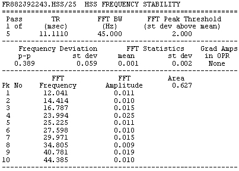
Details: Customer complaint was poor system performance, ghosted images with FSE, only on certain studies.
Equipment: 1.5T Signa Horizon Echospeed, S5 magnet, transportable building
Refer to Illustration 5 for the initial SPT plot.
Illustration 5: INITIAL SPT FSE PLOT

SPT shows a plot of constant phase to have envelope oscillation in slice Z readout X scan. This is a typical plot of vibration disturbance. This site had similar oscillation in slice X readout Y scan.
Illustration 6: plot of vibration disturbance
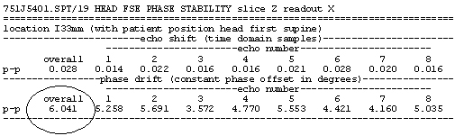
The overall phase drift is 6.041, which is well above the spec limit of 4.
Refer to Illustration 7 for the HSS results.
Illustration 7: RESULTS OF HSS TEST

Illustration 8: RESULTS OF HSS TEST
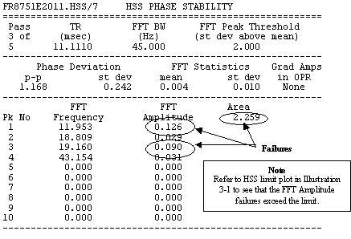
| NOTE: | Note the setting for vertical scale at 0.1 in the graphical data. The area measured for this experiment was 2.259, well above the spec of 1.2. Frequency failures are 11.953Hz and 19.16Hz, with reported amplitudes of 0.126 and 0.090 respectively. |
Test Case #1 Summary:
The results of these tests prove this site’s susceptibility to ambient vibration. This transportable site was placed on a concrete foundation that was too narrow for its base, which allowed for one complete wall, which ran the length of the building, to cantilever. Also, an adjacent building was placed in contact with the MR structure, allowing vibration to transfer between buildings. This construction error made the building unstable and susceptible to vibrations from multiple sources. As a result, the structure has a tendency to resonate around 12 and 19 Hz. Any disturbance, such as wind, automotive traffic, building traffic, swinging or automated mechanical doors, air conditioning units, coldhead compressor, etc., will cause an increase in FFT amplitude at these frequencies.
Vibration troubleshooting is basically a process of elimination. By removing the suspected sources of vibration one-by-one, such as powering off an AC unit or compressor, and comparing sequential passes of HSS with a baseline, vibration sources can be identified. Conversely, it is sometimes valuable to introduce a vibration source to see if it affects stability.
One method is commonly called the heel-drop test. During data acquisition, stamp your heel to the floor near the magnet. HSS will detect the disturbance. Compare the results to vibration specs for analysis. Try several areas around the magnet and table. Introduce other potential sources of vibration, such as mechanical doors, elevators, HVAC blower motors, etc., to find the main contributors. Suspect activities of nearby areas include loading docks or Emergency Rooms that have heavy traffic. HSS is a sensitive tool and will pick up very small disturbances.
If all else fails, a vibration expert/consultant may need to be contacted to help with the analysis. Before going to outside help, contact the On-Line Center or ZSE to assist with your troubleshooting.
Details: Phase smearing affecting image quality
Equipment: 1.5T Signa Hispeed LX with CX magnet
Refer to Illustration 9 for the initial SPT plots.
Illustration 9: INITIAL SPT FSE PLOT

This site’s SPT Constant Phase Plot showed similar oscillation on all gradients. Phase numbers were from 5 to 7p-p. Turning the coldhead off and repeating the experiment lowered the phase numbers to 3-5p-p. However, oscillations were still present.
Illustration 10: Head FSE Readout
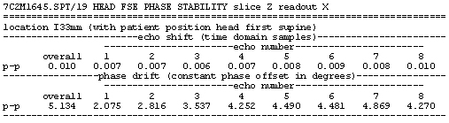
Refer to Illustration 11 for the HSS results with the coldhead on.
Illustration 11: HSS OUTPUT WITH COLDHEAD ON
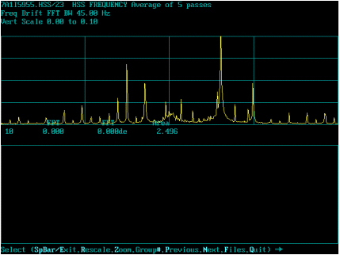
HSS output with coldhead on. Note the vertical scale at 0.1. The coldhead can introduce vibration peaks as shown in the plot. The peaks from the coldhead are not the problem.
Illustration 12: HSS OUTPUT WITH COLDHEAD ON

Refer to Illustration 13 for the HSS results with the coldhead off.
Illustration 13: HSS REPEATED WITH COLDHEAD OFF
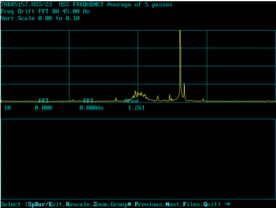
HSS repeated with the coldhead off. Problem peak identified at 29 Hz.
Illustration 14: HSS REPEATED WITH COLDHEAD OFF
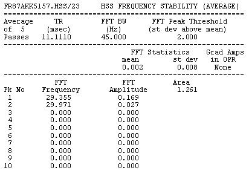
Refer to Illustration 15 for HSS results after the magnet was re-anchored to the floor.
Illustration 15: HSS RESULTS AFTER RE-ANCHOR
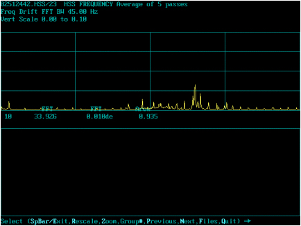
Note that the re-anchoring damped the coldhead peaks.
Illustration 16: HSS RESULTS AFTER RE-ANCHOR
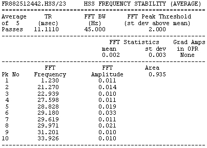
Test Case #2 Summary:
This 1.5T CX magnet was installed incorrectly. The problem was that the chemical/epoxy anchors used by the contractor didn’t have sufficient holding strength. As a result, the anchors loosened when clamping down the magnet. The magnet needed to be moved and a new anchoring system installed. Signa Horizon Pre-Installation requires a magnet clamping force of 12000 +/- 1000 lbs. It’s the responsibility of the contractor to provide an anchoring system that meets this requirement. The methods may be different depending on the flooring material. The contractor is required to test the anchoring system before the magnet is installed to verify the clamping force. For more information on magnet mounting and installation, see the following references:
DIR 2168178 GE 1.5T & 1.0T Cx Active Shield Magnet Delivery and Installation, Sect. 6, Magnet Leveling, Foot Shimming, and Bolting Down
DIR 2120460 Signa Horizon Pre-Installation
DIR 2120460 Signa Horizon Pre-Installation
Sect. 2-9-1 Magnet Loading Considerations
Sect. 7-7 Anchor Hardware Requirements for MR Equipment Inside RF Shielded Rooms
Sect. 4-15 Vibration
Appendix A MR Site Vibration Test Guidelines
Details: Customer complains of intermittent body coil ghosting and overall system unreliability. Problem occurs several times daily, varying in severity. Images are occasionally undiagnostic.
Equipment: 1.5T Signa Horizon (SR17), S3 magnet fixed, 5.5 software
Refer to Illustration 17 for initial SPT FSE plots.
Illustration 17: INITIAL SPT - FSE PLOT
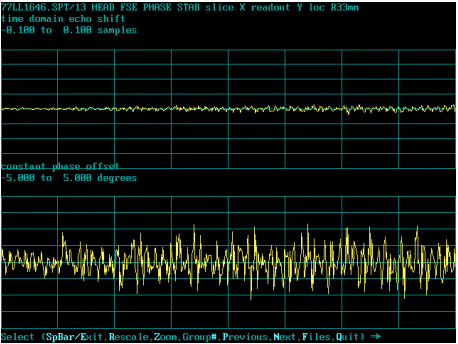
SPT FSE Constant phase plot shows hash that resembles oscillation on all axes. Constant phase is at 5.77.
Illustration 18: INITIAL SPT - FSE PLOT
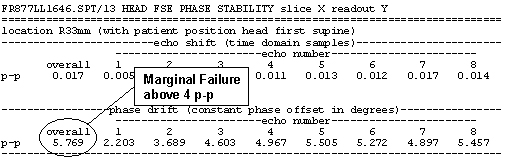
Refer to Illustration 19 for the initial SPT FGRE plots.
Illustration 19: INITIAL SPT - FGRE PLOT

SPT FGRE Constant Phase plot shows erratic phase drift that varies from 6 to 26 degrees with successive SPT passes.
Illustration 20: INITIAL SPT - FGRE PLOT
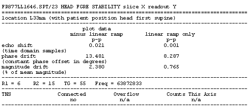
Refer to Illustration 21 for the HSS results.
Illustration 21: HSS RESULTS
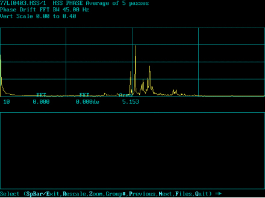
HSS shows disturbances of 22.1, 23, 24, 24.2, 25, 25.4 Hz with an area measurement of 5.153. Note vertical scale set to 0.4.
Illustration 22: HSS RESULTS
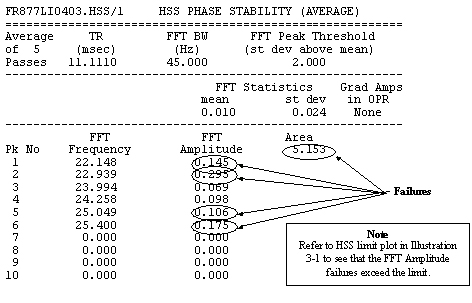
Test Case #3 Summary:
By using SPT results in combination with HSS, several huge blower assemblies located in a HVAC utility room three floors above the MRI suite were found to be introducing vibration and intermittently affecting system performance. Building maintenance people were called in to assist with isolating the source. By powering off one blower unit at a time, main contributors were isolated. In this case, several instances were spring isolation devices supporting the duct work that were being mechanically bypassed with support cables, allowing vibration to be transferred to the building structure. Also, the isolation supports for the fan units were found to be inadequate and too soft, allowing vibrations to be transferred to the surrounding structures.
The magnet mounting bolts were also found to be loose. By tightening the bolts, SPT FSE constant phase dropped to within spec. Correcting the problems with the fan units cleared up the HSS peaks, however, SPT FGRE constant phase behavior was still erratic. The phase drift was due to Electro-Magnetic Interference (EMI) from a nearby subway terminal. This was identified by using a flux gate sensor. The magnet was installed within 30 feet of a main power feed that connected a main train station to a local substation. Current passing though the cable produced enough magnetic interference to affect the MRI performance.